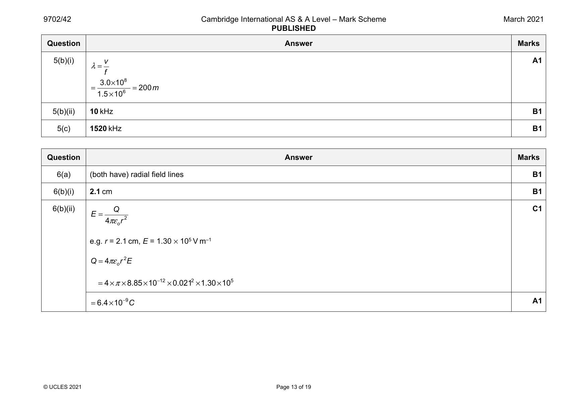
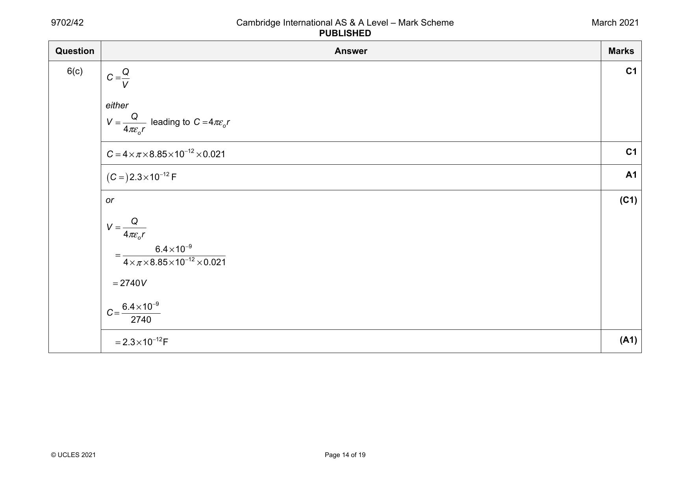
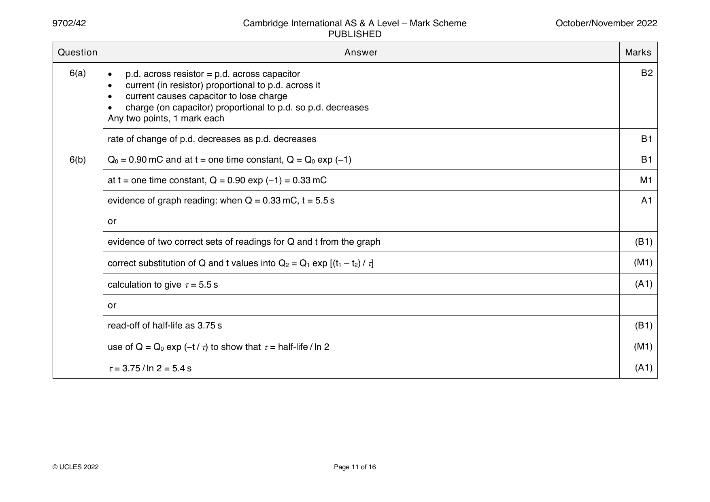
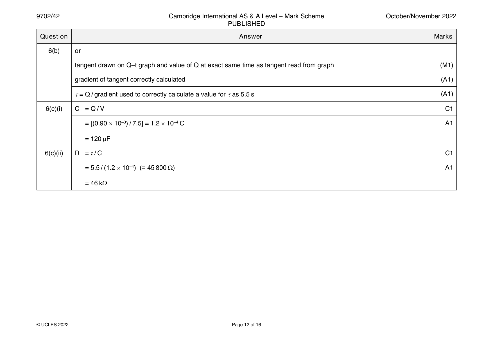
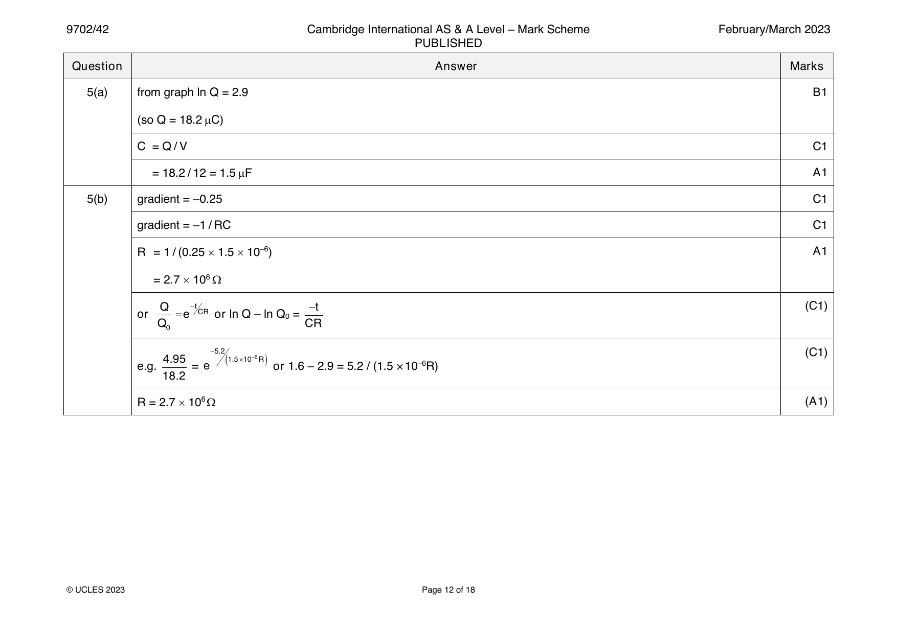
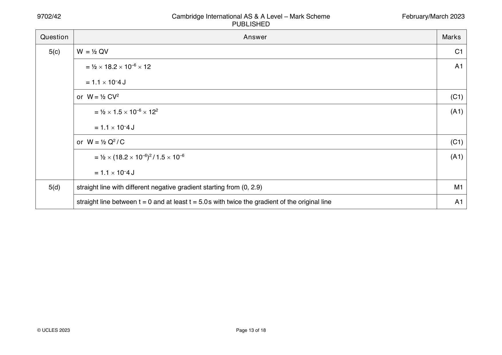

Try the new view →
9702-2021-m-42-q06
March 2021 · Paper 42 · Question 6 · 7 marks


6(a) (both have) radial field lines B1
6(b)(i) 2.1 cm B1
6(b)(ii) Q C1
E =
4πεr2
o
e.g. r = 2.1 cm, E = 1.30 × 105 V m–1
Q =4πεr2E
o
=4×π×8.85×10 −12×0.0212×1.30×105
=6.4×10 −9C A1
© UCLES 2021 Page 13 of 19
6(c) Q C1
C =
V
either
Q
V = leading to C = 4πεr
4πεr o
o
C =4×π×8.85×10 −12×0.021 C1
( C = ) 2.3×10 −12F A1
or (C1)
Q
V =
4πεr
o
6.4×10 −9
=
4×π×8.85×10 −12×0.021
=2740V
6.4×10 −9
C =
2740
=2.3×10 −12F (A1)
© UCLES 2021 Page 14 of 19
Official mark scheme pages: 13, 14 · source PDF URL
9702-2021-mj-41-q07
May/June 2021 · Paper 41 · Question 7 · 9 marks
7(a) charge / potential M1
charge is on one plate, potential is p.d. between the plates A1
7(b)(i) I = Q / t M1
charge = CV and time = 1 / f leading to I = fCV A1
7(b)(ii) 4.8 × 10–6 = 150 × 60 × C C1
C = 530 pF A1
7(c) (total) capacitance is halved B1
charge (for each cycle/discharge) is halved B1
or
since f and V are constant, current is proportional to capacitance
current = 2.4 μA B1
© UCLES 2021 Page 13 of 18
Official mark scheme pages: 13 · source PDF URL
9702-2021-mj-42-q06
May/June 2021 · Paper 42 · Question 6 · 8 marks
6(a) potential difference applied between the plates M1
causes charge separation (between the plates) A1
or
causes energy to be stored (between the plates)
6(b)(i) I = Q / t M1
clear substitution of Q = CV and f = 1 / t, leading to I = fCV A1
6(b)(ii) 2.5 × 10–6 = 50 × C × 180 C1
C = 280 pF A1
6(c) (total) capacitance increases B1
greater charge (for each cycle/discharge) so greater (average) current B1
or
V and f are constant so (average) current increases
or
I is (directly) proportional to C so (average) current increases
© UCLES 2021 Page 13 of 19
Official mark scheme pages: 13 · source PDF URL
9702-2021-mj-43-q07
May/June 2021 · Paper 43 · Question 7 · 9 marks
7(a) charge / potential M1
charge is on one plate, potential is p.d. between the plates A1
7(b)(i) I = Q / t M1
charge = CV and time = 1 / f leading to I = fCV A1
7(b)(ii) 4.8 × 10–6 = 150 × 60 × C C1
C = 530 pF A1
7(c) (total) capacitance is halved B1
charge (for each cycle/discharge) is halved B1
or
since f and V are constant, current is proportional to capacitance
current = 2.4 μA B1
© UCLES 2021 Page 13 of 18
Official mark scheme pages: 13 · source PDF URL
9702-2021-on-41-q06
Oct/Nov 2021 · Paper 41 · Question 6 · 5 marks
6(a) Q = CV and E = ½CV2 B1
6(b)(i) C = CL / (L – D) B1
N
6(b)(ii) (charge is unchanged by moving the plates so) Q = CV B1
N
6(b)(iii) V = Q / C B1
N N N
= (CV) / [CL / (L – D)]
= V(L – D) / L
6(c) oppositely charged plates attract, so energy stored decreases B1
© UCLES 2021 Page 11 of 15
Official mark scheme pages: 11 · source PDF URL
9702-2021-on-42-q06
Oct/Nov 2021 · Paper 42 · Question 6 · 7 marks
6(a) work done per unit charge B1
(work done in) moving positive charge from infinity B1
6(b) C = Q / V C1
V = Q / (4πεr) and so C = Q / [Q / (4πεr)] = 4πεr A1
0 0 0
6(c) Q = 4πεrV = 4π × 8.85 × 10–12 × 0.13 × 4500 C1
0
( = 6.5 × 10–8 C)
(Q – q) / 13 = q / 5.2 C1
5.2Q – 5.2q = 13q, so q = (5.2 / 18.2)Q A1
q = (5.2 / 18.2) × 6.5 × 10–8
= 1.9 × 10–8 C
or
V = Q / C (C1)
T T T
= 6.5 × 10–8 / [4π × 8.85 × 10–12 × (0.13 + 0.052)]
( = 3210 V)
q = 4π × 8.85 × 10–12 × 0.052 × 3210 (A1)
= 1.9 × 10–8 C
© UCLES 2021 Page 12 of 19
Official mark scheme pages: 12 · source PDF URL
9702-2021-on-43-q06
Oct/Nov 2021 · Paper 43 · Question 6 · 5 marks
6(a) Q = CV and E = ½CV2 B1
6(b)(i) C = CL / (L – D) B1
N
6(b)(ii) (charge is unchanged by moving the plates so) Q = CV B1
N
6(b)(iii) V = Q / C B1
N N N
= (CV) / [CL / (L – D)]
= V(L – D) / L
6(c) oppositely charged plates attract, so energy stored decreases B1
© UCLES 2021 Page 11 of 15
Official mark scheme pages: 11 · source PDF URL
9702-2022-m-42-q05
March 2022 · Paper 42 · Question 5 · 10 marks
5(a) (energy stored =) area under line or ½ QV C1
= ½ × 8.0 × 1.2 × 10-4
= 4.8 × 10–4 J A1
5(b)(i) (τ=) RC C1
(τ=) 220 × 103 × (1.2 × 10-4/8.0) = 3.3 s A1
5(b)(ii) E ∝ V2 C1
(so time to) V / 3 C1
o
−t
V = V e RC
o
V −t C1
o = V e 3.3
3 o
1 −t
= e 3.3
3
t = 3.6 s A1
5(c) (total) capacitance is doubled M1
time constant is doubled A1
© UCLES 2022 Page 10 of 17
Official mark scheme pages: 10 · source PDF URL
9702-2022-mj-42-q05
May/June 2022 · Paper 42 · Question 5 · 11 marks
5(a) charge / potential (difference) M1
charge is charge on one plate, and potential is p.d. across the plates A1
5(b) p.d. across both capacitors = E B1
Q = Q + Q B1
T 1 2
C E = C E + C E hence C = C + C B1
T 1 2 T 1 2
5(c)(i) [(1 / 22) + (1 / 47)]–1 = 15 F A1
5(c)(ii) energy = ½CV 2 C1
= ½ 15 10–6 122 A1
= 1.1 10–3 J
5(c)(iii) initial p.d. (across 22 F) = 12 (15 / 22) C1
= 8.2 V
or
final p.d. across both capacitors = 6.0 (22 / 15)
= 8.8 V
V = V exp [– t / (2.7 106 15 10–6)] C1
0
6.0 = 8.2 exp [– t / (2.7 106 15 10–6)] A1
or
8.8 = 12 exp [– t / (2.7 106 15 10–6)]
t = 13 s
© UCLES 2022 Page 11 of 16
Official mark scheme pages: 11 · source PDF URL
9702-2022-on-41-q05
Oct/Nov 2022 · Paper 41 · Question 5 · 11 marks
5(a)(i) Q = CV C1
Q = 24 470 10–6 A1
0
= 0.011 C
5(a)(ii) I = 24 / 5600 A1
0
= 4.3 10–3 A
5(a)(iii) = RC C1
= 5600 470 10–6 A1
= 2.6 s
5(a)(iv) line with negative gradient throughout passing through (0, I ) B1
0
exponential decay curve asymptotic to t-axis B1
5(b)(i) current in wire P gives rise to a magnetic field B1
as current (in P) changes, wire Q cuts (magnetic) flux (of wire P) B1
cutting magnetic flux causes induced e.m.f. (across Q) B1
5(b)(ii) sketch shows line with a negative gradient throughout B1
© UCLES 2022 Page 10 of 15
Official mark scheme pages: 10 · source PDF URL
9702-2022-on-42-q06
Oct/Nov 2022 · Paper 42 · Question 6 · 10 marks


6(a) • p.d. across resistor = p.d. across capacitor B2
• current (in resistor) proportional to p.d. across it
• current causes capacitor to lose charge
• charge (on capacitor) proportional to p.d. so p.d. decreases
Any two points, 1 mark each
rate of change of p.d. decreases as p.d. decreases B1
6(b) Q = 0.90 mC and at t = one time constant, Q = Q exp (–1) B1
0 0
at t = one time constant, Q = 0.90 exp (–1) = 0.33 mC M1
evidence of graph reading: when Q = 0.33 mC, t = 5.5 s A1
or
evidence of two correct sets of readings for Q and t from the graph (B1)
correct substitution of Q and t values into Q = Q exp [(t – t ) / ] (M1)
2 1 1 2
calculation to give = 5.5 s (A1)
or
read-off of half-life as 3.75 s (B1)
use of Q = Q exp (–t / ) to show that = half-life / ln 2 (M1)
0
= 3.75 / ln 2 = 5.4 s (A1)
© UCLES 2022 Page 11 of 16
6(b) or
tangent drawn on Q–t graph and value of Q at exact same time as tangent read from graph (M1)
gradient of tangent correctly calculated (A1)
= Q / gradient used to correctly calculate a value for as 5.5 s (A1)
6(c)(i) C = Q / V C1
= [(0.90 10–3) / 7.5] = 1.2 10–4 C A1
= 120 F
6(c)(ii) R = τ / C C1
= 5.5 / (1.2 10–4) (= 45 800 ) A1
= 46 k
© UCLES 2022 Page 12 of 16
Official mark scheme pages: 11, 12 · source PDF URL
9702-2022-on-43-q05
Oct/Nov 2022 · Paper 43 · Question 5 · 11 marks
5(a)(i) Q = CV C1
Q = 24 470 10–6 A1
0
= 0.011 C
5(a)(ii) I = 24 / 5600 A1
0
= 4.3 10–3 A
5(a)(iii) = RC C1
= 5600 470 10–6 A1
= 2.6 s
5(a)(iv) line with negative gradient throughout passing through (0, I ) B1
0
exponential decay curve asymptotic to t-axis B1
5(b)(i) current in wire P gives rise to a magnetic field B1
as current (in P) changes, wire Q cuts (magnetic) flux (of wire P) B1
cutting magnetic flux causes induced e.m.f. (across Q) B1
5(b)(ii) sketch shows line with a negative gradient throughout B1
© UCLES 2022 Page 10 of 15
Official mark scheme pages: 10 · source PDF URL
9702-2023-m-42-q05
March 2023 · Paper 42 · Question 5 · 10 marks


5(a) from graph ln Q = 2.9 B1
(so Q = 18.2 C)
C = Q / V C1
= 18.2 / 12 = 1.5 F A1
5(b) gradient = –0.25 C1
gradient = –1 / RC C1
R = 1 / (0.25 1.5 10–6) A1
= 2.7 106
Q −t −t (C1)
or = e CR or ln Q – ln Q =
0
Q CR
0
−5.2 (C1)
4.95 ( 1.5 10−6R )
e.g. = e or 1.6 – 2.9 = 5.2 / (1.5 ×10–6R)
18.2
R = 2.7 106 (A1)
© UCLES 2023 Page 12 of 18
5(c) W = ½ QV C1
= ½ 18.2 10–6 12 A1
= 1.1 10–4 J
or W = ½ CV2 (C1)
= ½ 1.5 10–6 122 (A1)
= 1.1 10–4 J
or W = ½ Q2 / C (C1)
= ½ (18.2 10–6)2 / 1.5 10–6 (A1)
= 1.1 10–4 J
5(d) straight line with different negative gradient starting from (0, 2.9) M1
straight line between t = 0 and at least t = 5.0s with twice the gradient of the original line A1
© UCLES 2023 Page 13 of 18
Official mark scheme pages: 12, 13 · source PDF URL
9702-2023-mj-42-q05
May/June 2023 · Paper 42 · Question 5 · 9 marks
5(a)(i) Q = CV A1
A
5(a)(ii) E = ½CV2 A1
A
5(b)(i) some of the charge transfers to (the plates of) capacitor B B1
transfer is because the p.d.s across the capacitors are not equal B1
or
transfer stops when the p.d.s across the capacitors become equal
5(b)(ii) V = V M1
A B
charge on A + charge on B = CV M1
CV + 3CV = CV leading to V = V / 4 A1
B B B
or
C = 4C (M1)
T
Q = CV (M1)
T
V = CV / 4C = V / 4 (A1)
B
5(b)(iii) E = ½CV2 – nCV2, where n is a multiple that is less than ½ C1
or
total final energy = ½ 4C (V / 4)2
= ⅛CV2
E = ½CV2 – ⅛CV2 A1
= ⅜CV2
© UCLES 2023 Page 10 of 15
Official mark scheme pages: 10 · source PDF URL
9702-2023-on-42-q06
Oct/Nov 2023 · Paper 42 · Question 6 · 9 marks
6(a)(i) energy stored = area under graph C1
= ½ 450 10–6 8.0 = 1.8 10–3 J or 1.8 mJ A1
6(a)(ii) C = Q / V or E = ½CV2 C1
C = (450 10–6) / 8.0 or (2 1.8 10–3) / 8.02 A1
= 5.6 10–5 F
6(b)(i) V = V exp (– t / RC) and = RC C1
0
V = V exp (– t / ) A1
0
V = 8.0 V, and at one time constant, t =
0
V / 8.0 = exp (– / ), so ln (V / 8.0) = –1.0 or –ln (V / 8.0) = 1.0
6(b)(ii) [t read from graph at –ln (V / 8.0) = 1.0]: = 3.2 s A1
6(b)(iii) = RC C1
R = 3.2 / (5.6 10–5) A1
= 5.7 104
© UCLES 2023 Page 11 of 15
Official mark scheme pages: 11 · source PDF URL
9702-2024-mj-41-q06
May/June 2024 · Paper 41 · Question 6 · 10 marks
6(a) p.d. across capacitor proportional to charge on capacitor B2
p.d. across capacitor = p.d. across resistor
current in resistor proportional to p.d. across resistor
current in resistor = rate of decrease of charge on capacitor
Any two points, 1 mark each
charge proportional to current so rate of decrease of current decreases as current decreases (therefore exponential shape) B1
6(b)(i) R = V / I C1
= 12 / (0.13 10–3)
= 9.2 104 A1
6(b)(ii) correct read-off of at least one pair of values for I and t C1
attempted read-off of t when I = 0.048 mA C1
or
substitution of a correct pair of values of I and t into I = 0.13 exp (– t / )
= 4.3 s A1
6(c) = RC C1
C = / R = 4.3 / (9.2 104) A1
= 4.7 10–5 F
© Cambridge University Press & Assessment 2024 Page 11 of 15
Official mark scheme pages: 11 · source PDF URL
9702-2024-mj-42-q06
May/June 2024 · Paper 42 · Question 6 · 10 marks
6(a) equal charge on both capacitors B1
V + V = V M1
X Y
(Q / C ) + (Q / C ) = (Q / C ) leading to (1 / C ) + (1 / C ) = (1 / C ) A1
X Y T X Y T
or
(V / Q) + (V / Q) = (V / Q) leading to (1 / C ) + (1 / C ) = (1 / C )
X Y X Y T
6(b)(i) E = ½CV 2 C1
V = √[(2 2.5 10–3) / (200 10–6)] = 5.0 V A1
6(b)(ii) total capacitance = 600 F C1
E = ½ 600 10–6 5.02 C1
( = 7.5 10–3 J)
= 7.5 mJ A1
6(b)(iii) line with positive gradient starting at (0, 2.5) B1
straight line passing through (400, 7.5) B1
© Cambridge University Press & Assessment 2024 Page 11 of 16
Official mark scheme pages: 11 · source PDF URL
9702-2024-mj-43-q06
May/June 2024 · Paper 43 · Question 6 · 10 marks
6(a) p.d. across capacitor proportional to charge on capacitor B2
p.d. across capacitor = p.d. across resistor
current in resistor proportional to p.d. across resistor
current in resistor = rate of decrease of charge on capacitor
Any two points, 1 mark each
charge proportional to current so rate of decrease of current decreases as current decreases (therefore exponential shape) B1
6(b)(i) R = V / I C1
= 12 / (0.13 10–3)
= 9.2 104 A1
6(b)(ii) correct read-off of at least one pair of values for I and t C1
attempted read-off of t when I = 0.048 mA C1
or
substitution of a correct pair of values of I and t into I = 0.13 exp (– t / )
= 4.3 s A1
6(c) = RC C1
C = / R = 4.3 / (9.2 104) A1
= 4.7 10–5 F
© Cambridge University Press & Assessment 2024 Page 11 of 15
Official mark scheme pages: 11 · source PDF URL
9702-2024-on-42-q07
Oct/Nov 2024 · Paper 42 · Question 7 · 10 marks
7(a) charge / potential (difference) M1
charge is charge on one plate, and potential is p.d. between the plates A1
7(b)(i) straight line starting at the origin B1
line with positive gradient ending at (V, Q) B1
7(b)(ii) work done is the area under the graph B1
W = ½QV A1
7(c)(i) final p.d. shown as V / 4 for both capacitors B1
final charges add together to give Q B1
charge on Y = 3 charge on X (and both charges shown as a multiple of Q) B1
Fully correct answer:
X Y
final p.d. V / 4 V / 4
final charge Q / 4 3Q / 4
7(c)(ii) less than B1
© Cambridge University Press & Assessment 2024 Page 11 of 14
Official mark scheme pages: 11 · source PDF URL
9702-2025-m-42-q05
March 2025 · Paper 42 · Question 5 · 9 marks
5(a) Q = Q = Q and V = V + V M1
1 2 1 2
V = Q / C so: A1
Q / C = Q / C + Q / C leading to 1 / C = 1 / C + 1 / C
1 2 1 2
5(b) total capacitance = C + ½C = (3 / 2)C C1
total capacitance = gradient C1
= 400 10–6 / 6.0
either: C = (2 400 10–6) / (3 6.0) = 4.4 10–5F = 44F A1
or: C = (2 400) / (3 6.0) = 44F
5(c)(i) τ = RC C1
= 54 103 (3/2) 44 10–6 A1
= 3.6s
5(c)(ii) 0.15 = exp(–t / 3.6) C1
t = 6.8s A1
Question Answer Marks
Official mark scheme pages: 10 · source PDF URL
9702-2025-mj-42-q07
May/June 2025 · Paper 42 · Question 7 · 10 marks
7(a) V = V B1
C R
7(b)(i) C = Q / V C1
= (7.2 × 10–3) / 12 (= 6.0 × 10–4 F) A1
= 600 F
7(b)(ii) R = V / I C1
= 12 / (1.5 × 10–3) (= 8000 ) A1
= 8.0 k
7(b)(iii) = RC C1
= 8000 × 6.0 × 10–4 A1
= 4.8 s
7(c) Any two points from: B2
• charge and current are both (directly) proportional to voltage
• charge is (directly) proportional to current
• current is the rate of change of charge
Q is proportional to the rate of change of Q (so exponential variation) B1
© Cambridge University Press & Assessment 2025 Page 15 of 18
Official mark scheme pages: 15 · source PDF URL
9702-2025-on-41-q06
Oct/Nov 2025 · Paper 41 · Question 6 · 11 marks
6(a) series charges: Q = Q = Q B1
S 1 2
series p.d.s: V = V + V B1
S 1 2
parallel charges: Q = Q + Q B1
S 1 2
parallel p.d.s: V = V = V B1
S 1 2
6(b)(i) E = ½ CV2 C1
p.d. = [(2 19 10–3) / (470 10–6)]½ A1
= 9.0 V
6(b)(ii) E = Q2 / 2C or C = Q / V C1
Q = (19 × 10–3 × 2 × 470 × 10–6)½ A1
or
Q = 470 × 10–6 × 9.0
Q = 4.2 10–3 C
6(b)(iii) total charge unchanged C1
total capacitance = (470 + 180) 10–6 (F) C1
E = Q2 / 2C = (4.23 10–3)2 / (2 650 10–6) (= 0.014 J) A1
E = 14 mJ
© Cambridge University Press & Assessment 2025 Page 13 of 17
Official mark scheme pages: 13 · source PDF URL
9702-2025-on-42-q06
Oct/Nov 2025 · Paper 42 · Question 6 · 11 marks
6(a) force per unit positive charge B1
6(b)(i) radial lines B1
arrows pointing away from the sphere B1
6(b)(ii) C = Q / V C1
V = 83 / 69 A1
= (+)1.2 V
6(b)(iii) V = Q / 4ε r C1
0
r = (83 10–12) / (4 8.85 10–12 1.2)
= 0.62 m A1
6(b)(iv) E = Q / 4ε r2 C1
0
= (83 10–12) / (4 8.85 10–12 0.622) A1
= 1.9 N C–1
6(c) 26 = 83 exp [– t / (120 106 69 10–12)] C1
t = 9.6 10–3 s A1
© Cambridge University Press & Assessment 2025 Page 13 of 17
Official mark scheme pages: 13 · source PDF URL
9702-2025-on-43-q06
Oct/Nov 2025 · Paper 43 · Question 6 · 11 marks
6(a) series charges: Q = Q = Q B1
S 1 2
series p.d.s: V = V + V B1
S 1 2
parallel charges: Q = Q + Q B1
S 1 2
parallel p.d.s: V = V = V B1
S 1 2
6(b)(i) E = ½ CV2 C1
p.d. = [(2 19 10–3) / (470 10–6)]½ A1
= 9.0 V
6(b)(ii) E = Q2 / 2C or C = Q / V C1
Q = (19 × 10–3 × 2 × 470 × 10–6)½ A1
or
Q = 470 × 10–6 × 9.0
Q = 4.2 10–3 C
6(b)(iii) total charge unchanged C1
total capacitance = (470 + 180) 10–6 (F) C1
E = Q2 / 2C = (4.23 10–3)2 / (2 650 10–6) (= 0.014 J) A1
E = 14 mJ
© Cambridge University Press & Assessment 2025 Page 13 of 17
Official mark scheme pages: 13 · source PDF URL